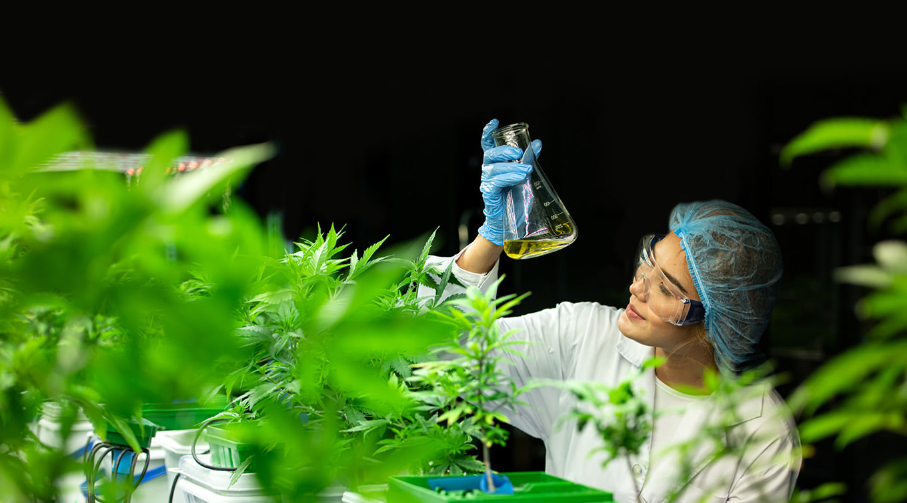
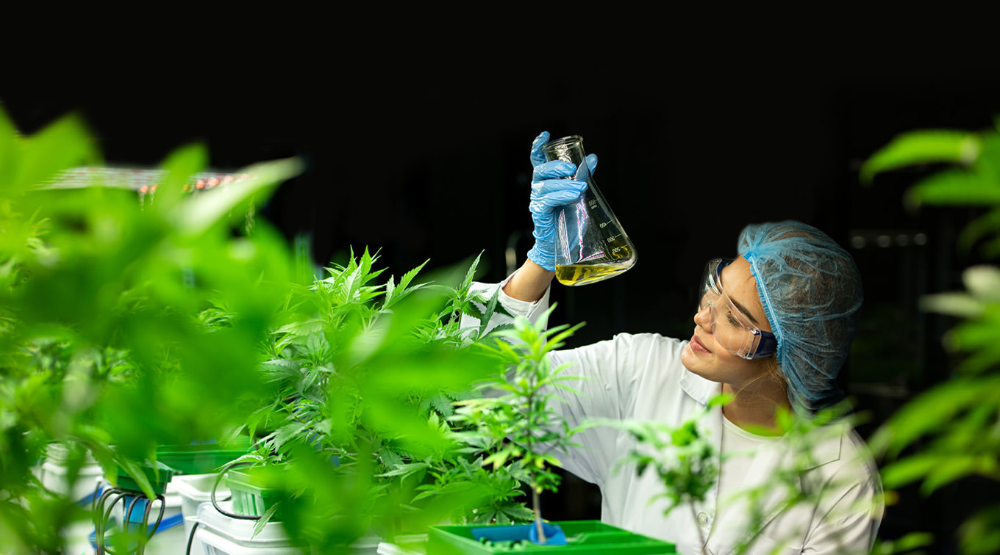

Continuous Surface and Air Purification, Day and Night.
NanoSilver® is a revolutionary hybrid coating combining titanium dioxide (TiO2) and nanosilver, offering powerful, round-the-clock protection against bacteria, viruses, mold, mildew, and fungi. Designed to work in both light and dark environments, NanoSilver® creates an ideal space for health and growth.
With its unique combination of TiO2 and NanoSilver® delivers unparalleled protection in all lighting conditions—whether through the photocatalytic action of TiO2 in the light or the antibacterial, antiviral properties of NanoSilver® in the dark.
This constant regeneration of reactive particles ensures long-lasting cleanliness and safety, helping to create pathogen-free environments for up to three years.
 
